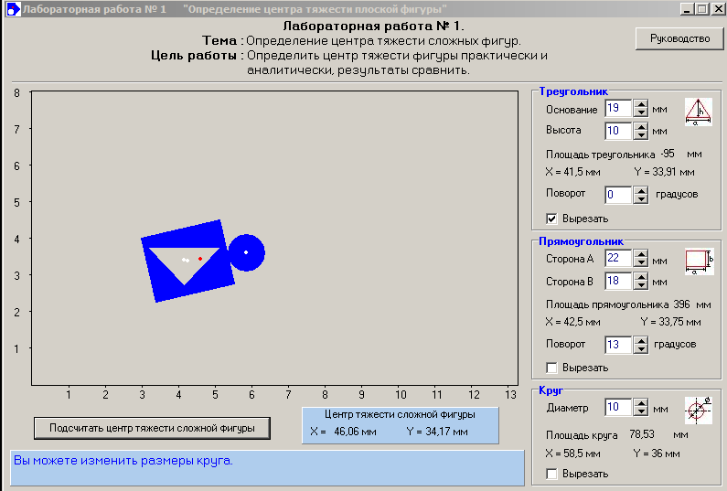
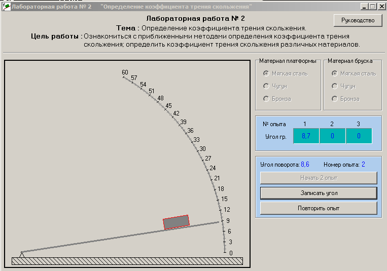
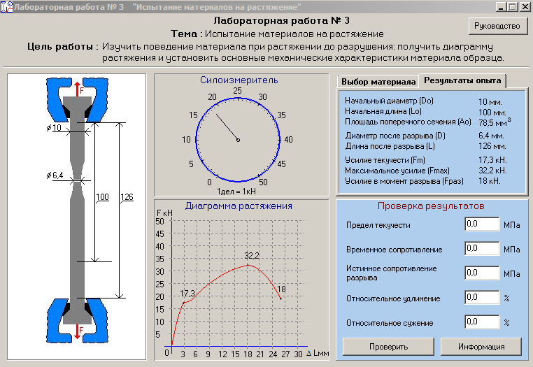
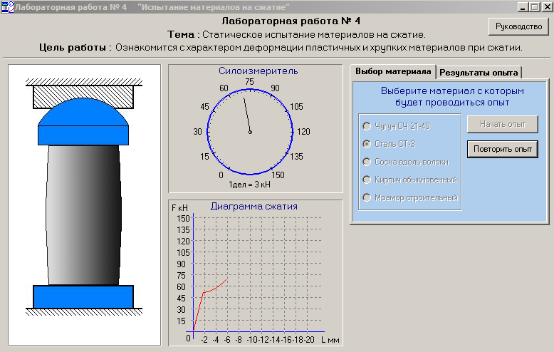
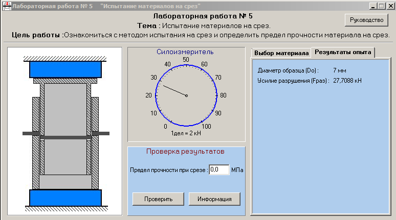
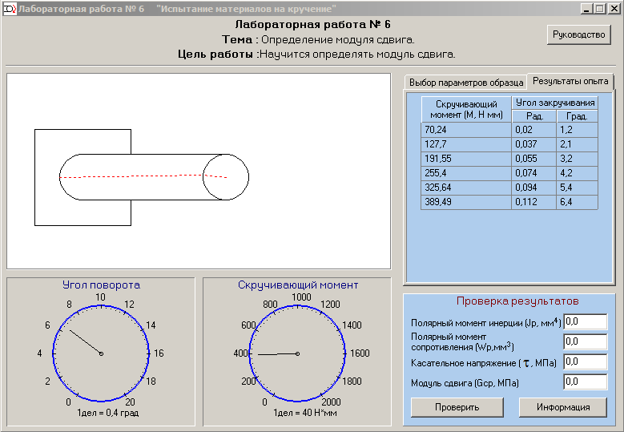
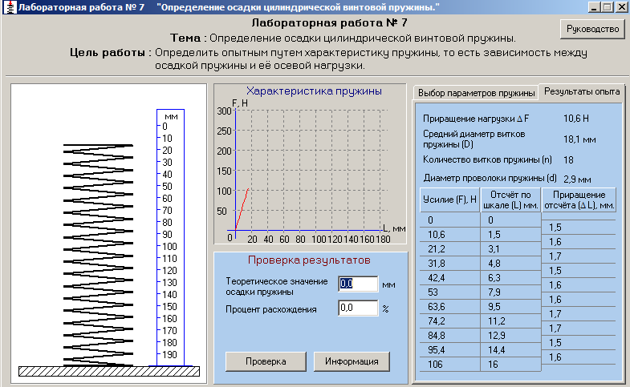
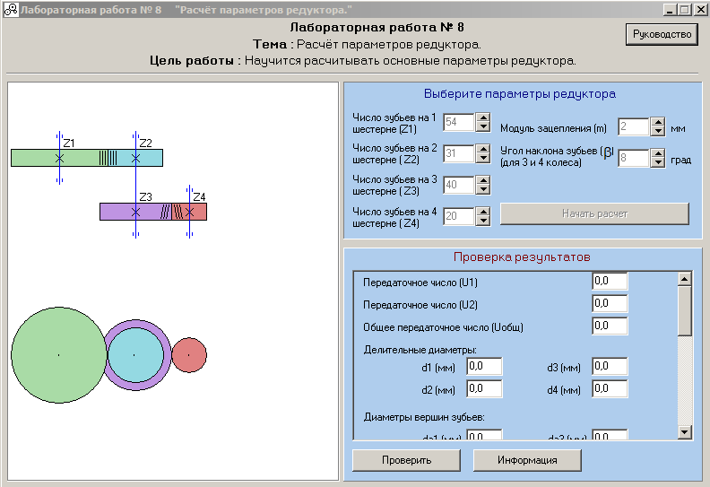

Программа для проведения лабораторных работ по сопромату.
Дипломный проект 2001 года в Кумертауском горном колледже.
Хисматуллин А.Р. 2001 г.
Написана на Delphi.
Лабораторные работы.
1. Определение центра тяжести сложной фигуры.

2. Определение коэффициента трения скольжения.

3. Испытание материалов на растяжение.

4. Статистические испытания материалов на сжатие.

5. Испытание материалов на срез.

6. Испытание материалов на кручение.

7. Определение осадки цилиндрической винтовой пружины.

8. Расчет зубчатых передач.
